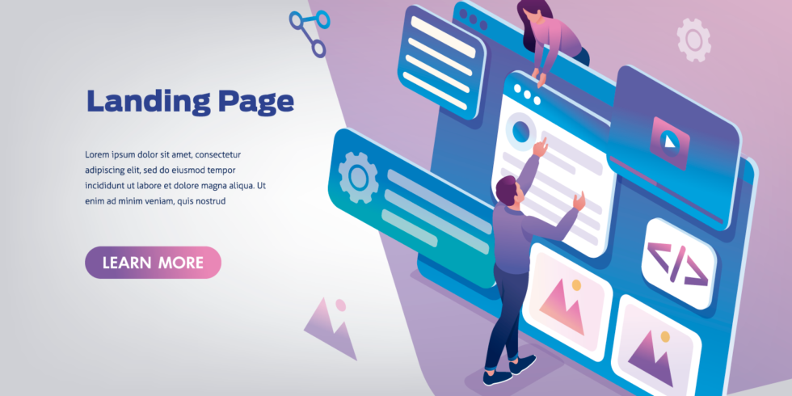

¿Qué es el landing page?
Una landing page es una "página de destino" o "página de aterrizaje" a la que el usuario llega después de hacer clic en un enlace o un CTA (Call-to-Action) desde otra página. A diferencia de otros tipos de páginas, cada landing page se diseña con un objetivo muy específico y todos los elementos de la landing page deben estar encaminados a conseguir dicho objetivo. Podemos diferenciar diferentes tipos de landing pages en función del objetivo que persigan. Veamos a continuación qué tipos de landing pages podemos encontrar.El Modelo de Objetos del Documento (DOM) es una interfaz de programación para documentos web. Representa la estructura del documento y permite que un lenguaje de script pueda modificar su contenido, estructura y estilo.
Cómo funciona?
Cuando visitas una página web, tu navegador web descarga el código HTML de esa página y, a continuación, crea una representación interna de ese código en forma de un árbol de objetos.
¿Para qué sirve una Landing page?
Una landing page sirve para convertir a visitantes en clientes potenciales mediante una oferta clara y específica. Este recurso se utiliza en campañas de marketing digital para generar conversiones bajo diferentes objetivos, por ejemplo: comprar un producto, suscribirse a un servicio o descargar un recurso.El DOM es esencial para la creación de aplicaciones web interactivas y dinámicas. Permite la creación de experiencias de usuario ricas y receptivas, como aplicaciones de una sola página (SPA), juegos web, formularios interactivos y mucho más. Sin el DOM, la web sería estática y limitada en términos de interacción y funcionalidad.
¿Cómo saber cúal necesitas?
Para saber qué tipo de landing page necesitas, debes tener claro cuál es el objetivo de tu campaña de marketing digital. A continuación, te mostramos los tipos de landing pages más comunes y sus objetivos: